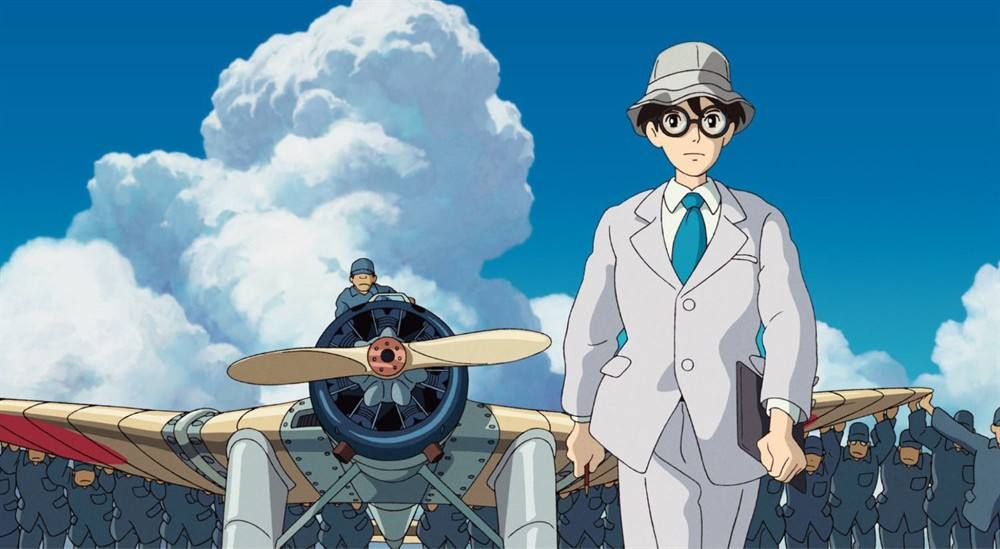
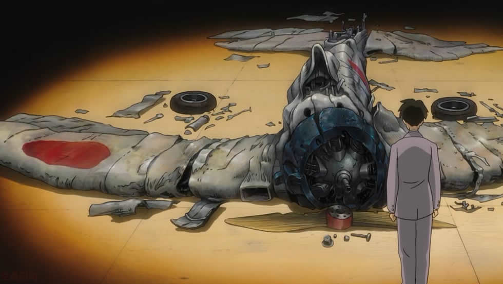

基本信息
《起风了》（英语：THE WIND RISES）是导演兼脚本的宫崎骏以同名漫画所改编
的动画电影。
该片于2013年7月20日在日本上映。该片讲述的是日本零式战斗机的
开发者堀越二郎年轻时的故事。宫崎的作品，大多洋溢着像出现乘着扫帚在天空飞、鱼子从海边
而来这样的幻想元素。但这次在影片中，没有不可思议的魔法，也不会出现怪物
，堀越二郎是第二次世界大战中设计零战的实际存在的人物。

剧情简介
从大正到昭和的这段时光，20世纪20~30年代的日本动荡不安，贫困与疾病，加上
不景气的经济和破坏力巨大的关东大地震，让生活在这座岛屿上的人民惶惶不可
终日。而随着战争脚步的临近，年轻人们的未来愈加变得扑朔迷离，捉摸不定。
自幼便对飞机抱以浓厚兴趣的堀越二郎（庵野秀明 配音），与他所景仰的意大利
飞机设计师卡普罗尼（野村万斋 配音）建立了穿越时空的友情，并从对方那里汲
取勇气和灵感。他发誓设计并制造出优美的飞机，长大后如愿考入东京某大学学
习航空工学。在此之后，他远赴德国留学，凭借自身掌握的航空技术，二郎成为
一名战斗机设计师，经典机型七试舰上战斗机（九六式舰上战斗机）便曾留下他
智慧的结晶。可在一次试飞中，他的飞机意外坠毁，颇受打击的二郎前往位于长
野县北佐久郡的轻井泽疗养，谁知竟在那里结识了一生的最爱。纵有疾风起,人生
不言弃。她叫菜穗子（泷本美织 配音），在1923年9月1日（日本十年前的关东大
地震期间）曾与二郎有过一面之缘。两人一见钟情，彼此约定相守终生。然而菜
穗子罹患了在当时被视作绝症的肺结核，前方的道路一片黑暗。但二郎始终无法
放弃制造优美飞机的梦想，二郎再度投身零式战斗机的设计工作中去。另一方面
，自知去日无多的菜穗子偷偷溜出疗养院，奔向她的爱人二郎。动荡的年代，有
限的生命，青年男女风中残烛般的飘摇爱情。
影片评价
韩国看过影片的影评人和媒体对影片持赞赏态度，《朝鲜日报》称，《起风了》
有“和宫崎骏本人一样使人平静的本事”。
美国《名利场》杂志称，从票房来看，《起风了》无疑是2013年最成功的日本电影。
意大利帕多瓦早报（Il mattino di Padova）的雷奥尼·恩兹奥/Leoni Ezio认为
虽然宫崎骏最好的作品是《千与千寻》，但是本片他也很喜欢，“这是一部很野心
的作品，也许还有点夸张，但是拍摄这样一部电影还是值得的。因为在动画片里
，通常都是讲述给孩子们的小故事，而宫崎骏讲述了一段很重要的历史。这是个
美丽的故事，它让我这样年岁的人重新回到了童年回忆中。”

经典台词
1.昔风不起，唯有努力生存。Le vent se lève ，il faut tenter de vivre。
2.再没有什么比幸福的回忆更妨碍幸福的了。
3.谁看见过风？我和你，都不曾看见过。但是当树叶颤动之时，就代表风正吹拂
而过。风啊，请展开羽翼，将它送达你的身边。
4.我甚至觉得，与其说是我忘记了时间的先后，不如说是我们在重复着这相似的
每一天的过程中，不知不觉地完全脱离了时间的掌控。
5.纵然越过死谷，亦不惧怕其祸，因及与我同在。